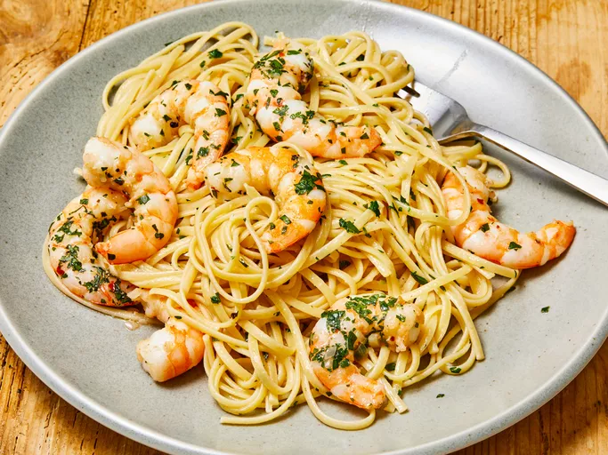

Shrimp Scampi

Description
This simple shrimp scampi recipe is sure to impress
friends and satisfy family appetites! Follow along
to see how you can make the perfect buttery bite
in only 40 minutes!
Ingredients
- 1 (16 ounce) package linguine pasta
- 2 tablespoons butter
- 2 tablespoons extra-virgin olive oil
- 2 shallots, finely diced
- 2 cloves garlic, minced
- 1 pinch red pepper flakes (Optional)
- 1 pound shrimp, peeled and deveined
- 1 pinch kosher salt and freshly ground pepper
- 1 lemon, juiced
- 2 tablespoons butter
- 2 tablespoons extra-virgin olive oil
- 1/4 cup finely chopped fresh parsley leaves
- 1 teaspoon extra-virgin olive oil, or to taste
Steps
- Gather ingredients
-
Bring a large pot of salted water to a boil;
cook linguine in boiling water until nearly
tender, 6 to 8 minutes. Drain
-
Melt 2 tablespoons butter with 2 tablespoons
olive oil in a large skillet over medium heat.
-
Cook and stir shallots, garlic, and red pepper
flakes in the hot butter and oil until shallots
are translucent, 3 to 4 minutes.
-
Season shrimp with kosher salt and black pepper;
add to the skillet and cook until pink, stirring
occasionally, 2 to 3 minutes. Remove shrimp
from skillet and keep warm.
-
Pour lemon juice into skillet and bring to a boil
while scraping the browned bits of food off the
bottom of the skillet with a wooden spoon.
-
Mix 2 tablespoons butter in skillet, stir 2
tablespoons olive oil into butter mixture, and
bring to a simmer.
-
Toss linguine, shrimp, and parsley in the butter
mixture until coated; season with salt and black
pepper. Drizzle with 1 teaspoon olive oil to serve.
- Serve hot and enjoy!